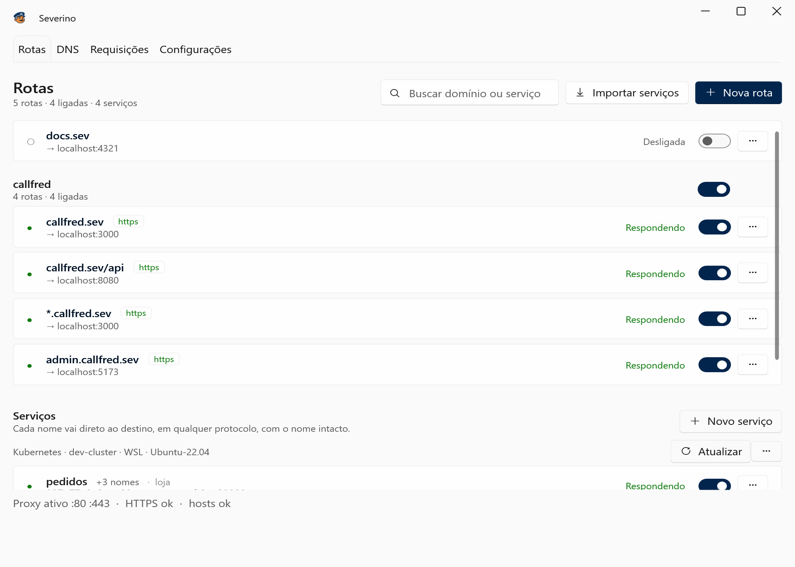
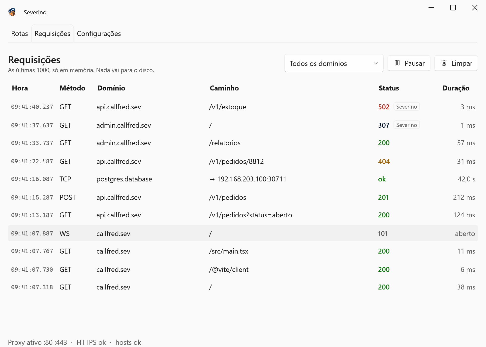
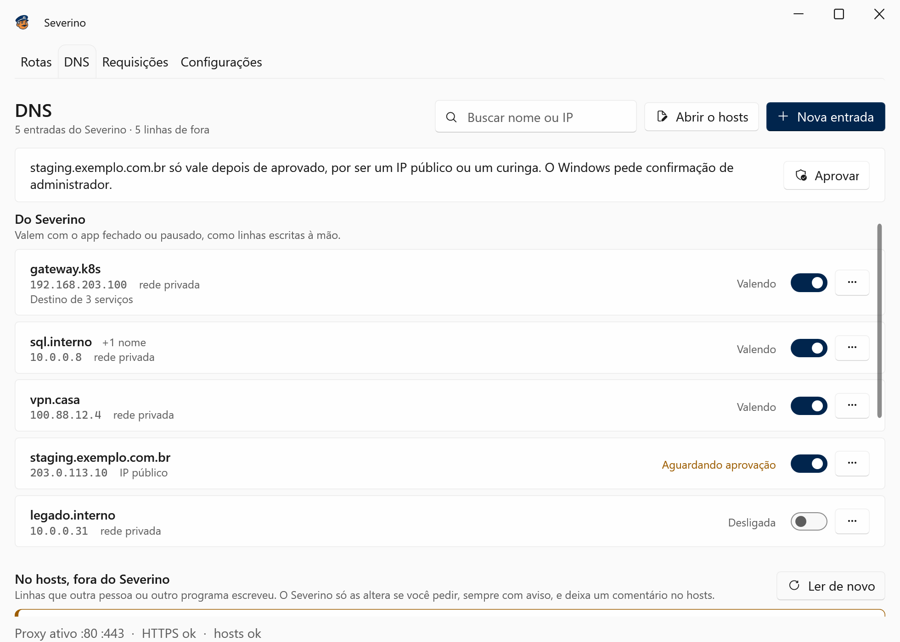
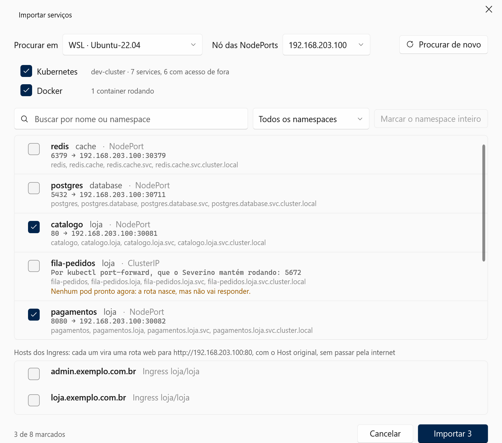

Chega de localhost:3000.
O Severino dá um nome para cada app que roda na sua máquina, como callfred.sev, e cuida do resto: o arquivo hosts, o proxy e um HTTPS que o navegador aceita. Você não edita nada à mão.
Para Windows 10 e 11, 64 bits.
Como funciona
Três passos, e o primeiro é o único que é seu.
-
Diga o nome e a porta
Numa janela, sem terminal: o domínio que você quer e onde o app está rodando.
-
O Severino arruma a portaria
Ele grava o nome no arquivo hosts, num bloco só dele, e passa a atender nas portas 80 e 443.
# >>> Severino managed block (do not edit) 127.0.0.1 callfred.sev ::1 callfred.sev # <<< Severino -
Abra no navegador
Com cadeado e tudo. O hot reload do Vite e os WebSockets continuam funcionando.
Todas as rotas numa janela só
Cada rota mostra se o app do outro lado está respondendo. Um clique liga ou desliga uma rota, e uma chave liga ou desliga um grupo inteiro; o botão de pausa, na bandeja, devolve os domínios à internet na hora.

Cada requisição, com status e tempo
A aba Requisições mostra o que passou pelo Severino, inclusive os WebSockets e as conexões dos serviços. Fica só na memória: nada vai para o disco.

Para quando um nome por app não basta
-
Curinga
*.lojas.sev atende cliente42.lojas.sev, a.b.lojas.sev e qualquer outro nome abaixo, cada um com o seu certificado HTTPS. Um nome exato, como api.lojas.sev, continua tendo a sua própria rota.
-
Um domínio, vários apps
callfred.sev/api vai para a API e o resto de callfred.sev vai para o front. O caminho mais longo vence, e dá para tirar o /api antes de repassar.
-
Grupos
As rotas de um projeto ficam juntas, e uma chave liga ou desliga todas de uma vez.
-
Pelo terminal
Um módulo PowerShell fala com o app aberto, com as mesmas regras das telas.
PS> New-SeverinoRoute callfred.sev http://localhost:3000 -Https -Group callfred PS> Set-SeverinoDns sql.interno 10.0.0.8 PS> Disable-SeverinoRoute -Group callfred
O hosts inteiro, sem abrir o Bloco de Notas como administrador
A aba DNS guarda nomes que vão direto a um IP, como sql.interno para 10.0.0.8, e mostra tudo o que já estava no seu hosts.
- Valem com o app fechado. Como uma linha escrita à mão, e também no WSL.
- O que não é dele fica marcado. As linhas que outra pessoa ou outro programa escreveu aparecem como "fora do Severino". Editar uma delas pede confirmação, mostra como vai ficar e deixa um comentário no hosts dizendo o que mudou.
- Um nome serve de destino. Rotas e serviços podem apontar para gateway.k8s em vez do IP: mudar o IP num lugar só atualiza todos.
- Rede privada direto, o resto com confirmação. IPs da rede interna entram na hora; IP público e curinga pedem a confirmação de administrador do Windows.

O cluster pelo nome de dentro do cluster
Seu app chama postgres.database:5432 como faria dentro do Kubernetes, e chega lá. Sem mudar uma linha de configuração.
- Importa sozinho. O Severino pergunta ao kubectl e ao docker que você já tem, no Windows ou dentro do WSL, e lista os services e containers. Você marca quais quer.
- Os quatro nomes. pedidos, pedidos.loja, pedidos.loja.svc e pedidos.loja.svc.cluster.local levam ao mesmo lugar: a NodePort do service, com o nome original na requisição.
- Qualquer protocolo. HTTP, gRPC, Postgres, Redis: cada serviço ganha um endereço próprio e o tráfego passa byte a byte.
- Docker pelo nome do Compose. orchestrator:4000 chega à porta publicada do container, seja qual for.
- Só ClusterIP também. Para o que não tem acesso de fora, o Severino mantém um kubectl port-forward rodando e o reinicia se a VPN cair.
- Acompanha sozinho. Recriou o container em outra porta? A rota se corrige em segundos, sem clique.
- O nome público pelo caminho curto. Os hosts dos Ingress viram rotas direto para o gateway interno, sem dar a volta pela internet.
- Apps no WSL também. As distros que você escolher recebem os mesmos nomes, e o que roda nelas chama os serviços do mesmo jeito.

~$ curl http://pedidos.loja/saude
{"status":"ok"}
~$ psql -h postgres.database -U app
psql (16.4)
app=>O que o Severino mexe na sua máquina
Uma ferramenta que pede administrador precisa dizer exatamente o que faz com ele.
- Arquivo hosts
- Dois blocos marcados: o das rotas, sempre com endereços de loopback, que pausar ou fechar o app esvazia; e o das entradas DNS, que fica. Linhas de fora só mudam quando você pede, com um comentário acima.
- Serviço auxiliar
- É a única parte que roda como administrador. Grava os blocos do hosts, responde os nomes curinga num DNS só dele em 127.53.0.1 e cria as regras do Windows que mandam esses sufixos para lá. IP público e sufixo curinga novos só entram depois da sua confirmação no aviso do Windows. O app em si roda como você.
- Proxy
- Escuta só em 127.0.0.1 e ::1. Nada fica exposto na rede.
- HTTPS
- Uma autoridade certificadora só sua, que só consegue assinar os domínios das suas rotas. A chave fica protegida pelo Windows, na sua conta.
- Ir embora
- "Limpar tudo", nas configurações, e o desinstalador tiram o que o Severino colocou: os blocos do hosts, as regras de DNS, a autoridade certificadora, a inicialização automática e os nomes nas distros do WSL.
O porteiro está pronto para começar
Um instalador para Windows 10 e 11, 64 bits, com tudo incluído. Ao abrir, um assistente confere a porta 80, o serviço auxiliar e o proxy do sistema antes da primeira rota.
Baixar para WindowsTodas as versões ficam nas releases do GitHub.
O instalador ainda não tem assinatura digital. Se o Windows SmartScreen avisar, clique em "Mais informações" e depois em "Executar assim mesmo".